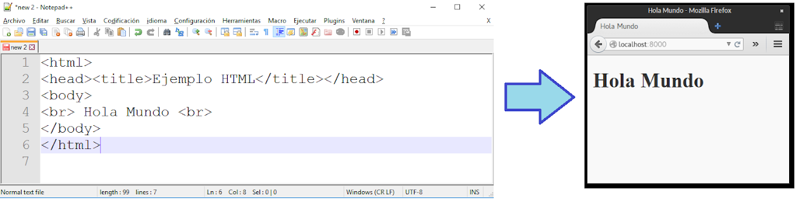
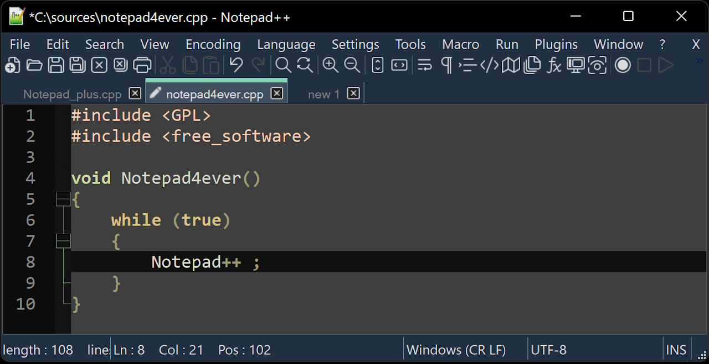
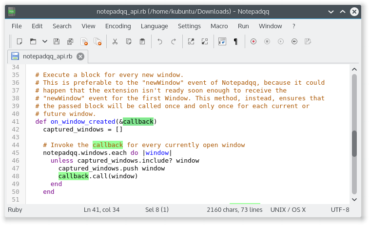
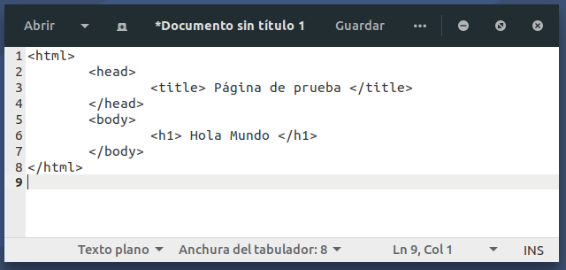
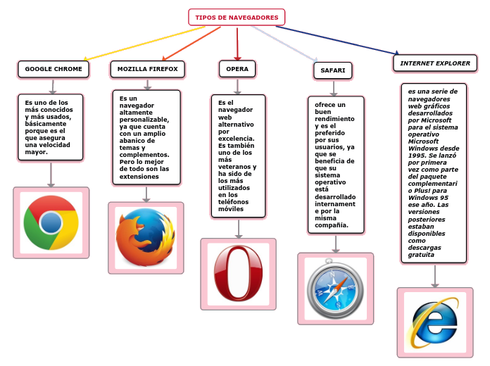

2. EDICIÓN DE PÁGINAS WEB EN LENGUAJE HTML
2. EDICIÓN DE PÁGINAS WEB EN LENGUAJE HTML
El lenguaje HTML es un lenguaje de hipertexto, es decir, texto en documentos que permiten enlazar directamente con otros documentos. Fue creado en 1980 para poder transmitir documentos por Internet con las velocidades tan limitadas de la época, ya que lo que se transmite son una serie de instrucciones para construir el documento en el ordenador del receptor.
💡 Curiosidad: HTML no es un lenguaje de programación propiamente dicho, aunque coloquialmente a veces se le denomina así.
HTML es el primer lenguaje que una persona debe conocer si desea comenzar a realizar páginas web, ya que es el primero que se utilizó y es la base de los lenguajes de edición actuales.

2.1 Editores de texto para HTML
Para empezar a crear páginas web solo necesitaremos un editor de texto básico y un navegador web. Podemos usar:
- Bloc de Notas de Windows (Notepad)
- Editor de texto básico en Linux
Existen editores de texto orientados a la programación que ofrecen ventajas para editar documentos HTML, como:
- Notepad++ para Windows
- Notepadqq para Linux
🚩 Ventajas de editores avanzados:
- Resaltan las palabras clave en distintos colores para facilitar la edición de código.
- Autocompletan las etiquetas HTML.
- Ofrecen consejos de ejecución.
En EducaAdOS o Ubuntu disponemos del Editor de textos, aunque también podemos instalar Notepadqq desde el Centro de Software de EducaAndOS o través del terminal.
|
 Editor Notepad++ |
 Editor Notepadqq |
 Bloc de Notas |
2.2 Navegadores web
Todos los navegadores web actuales soportan el lenguaje HTML (además de otros lenguajes), así que son capaces de mostrar las páginas web creadas con HTML con el mismo aspecto, independientemente del sistema operativo utilizado.
🎥 En el siguiente esquema puedes ver los navegadores más utilizados:

📝 ACTIVIDADES (3)
- ¿Qué es el lenguaje HTML y cuál es su función?
- ¿Por qué decimos que HTML no es un lenguaje de programación?
- Enumera tres ventajas de utilizar un editor avanzado como Notepad++ o Notepadqq frente a uno básico.
- ¿Qué navegadores web conoces? Nombra al menos tres.
- Investiga cuál es actualmente el navegador más utilizado y explica por qué.
Obra publicada con Licencia Creative Commons Reconocimiento Compartir igual 4.0